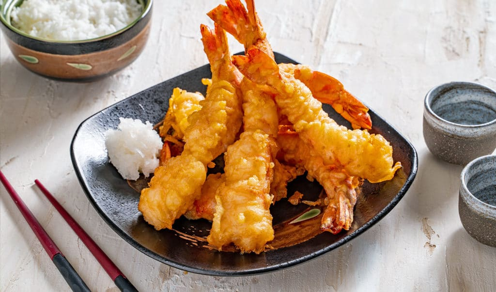
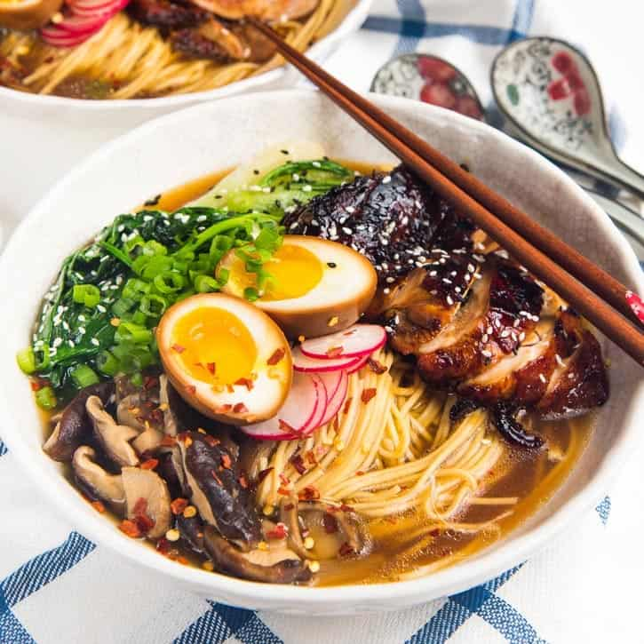
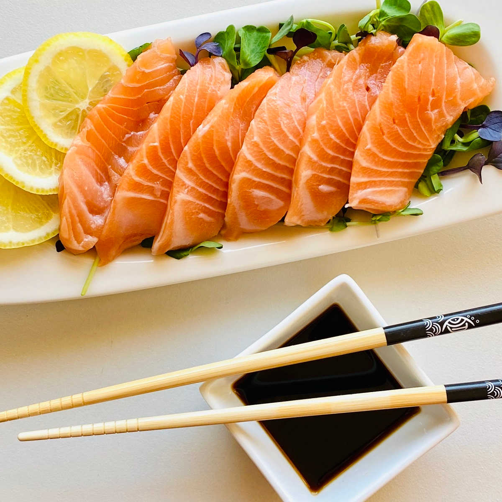

1 lb fresh shrimp jumbo or medium
1/4 cup cornstarch
1/2 teaspoon salt
1 large egg
1 cup all-purpose flour
1 cup cold water
1.5 cups oil for frying
1 Start by preparing the shrimp: devein them and remove the shell right up to the tail. Make 4 to 5 small notches on the “belly” of each shrimp. This will prevent them from curling up during frying.
2 Toss the shrimp in cornstarch and salt.
3 Heat up oil in a pot.
4 In a medium bowl, mix egg with water.
5 Add flour and stir in with a fork. Do not overmix.
6 Once the oil reaches 340 to 360 degrees F, dip each shrimp in batter and gently place in the oil.
7 Fry 4 to 5 shrimp at a time, not to overcrowd the pot and lower the oil temperature.
8 Fry each shrimp 2 to 3 minutes per side. Remove onto a plate with paper towel.
9 Repeat with all shrimp.
10 Serve with soy sauce or Asian dipping sauce

Marinade for the chicken:
2 tbsp mirin
1 tbsp dark soy sauce (Or mushroom dark soy sauce) double the amount of light soy sauce (below) if you don’t have dark soy sauce
1 tbsp light soy sauce
¼ tsp cayenne pepper
2 garlic cloves chopped finely
4 pieces chicken thigh boneless, skin off or on
Glaze for the chicken:
2 tsp brown sugar
2 tbsp dark soy sauce (or mushroom dark soy sauce) or 1 tbsp light soy sauce + 1 tbsp water
Classic Ramen:
4 – 5 cups good quality chicken stock preferably no sodium or low sodium
4 stalks of spring onions trimmed and cut in half
4 – 5 cloves garlic
2 inch piece of ginger sliced
4 red chili or 1 tbsp dried chili flakes (crushed red pepper) omit if you don't like spicy food
¼ cup light soy sauce
¼ cup mirin
8 ounces shiitake mushrooms stems trimmed and sliced, or cut in half
12 – 13 oz dried ramen noodles or 4 portions (or 4 portions of fresh ramen noodles)
Steamed Greens:
2 bunches of spinach or 4 shanghai bok choy or any Asian greens
Soy sauce
Sesame oil
Garlic
Ramen toppings:
4 stalks of spring onions sliced finely
Sliced radishes or bean sprouts
Ramen eggs marinated or plain
Chili garlic oil
Caramelized Soy Chicken:
1 Place all the ingredients for the chicken marinade in a bowl. Mix well to coat the chicken. If time permits, allow the chicken to marinate for at least 1 hour.
2 Preheat oven to 425°F, and place an oven rack in the top third of your oven. Line a baking sheet with parchment paper.
3 Place the chicken pieces on the baking sheet, skin side down (or smooth side down), evenly spaced apart. Then place the baking sheet in the preheated oven (upper third).
4 Let the chicken roast for 15 minutes. While the chicken is cooking, mix the brown sugar and dark soy sauce for the glaze, and start making the ramen
5 After 15 minutes, flip the chicken pieces over and spoon the glaze over them. Let the chicken cook for a further 10 – 15 minutes. Then remove from the oven and let them cool down.
6 Slice the chicken and set aside.
Ramen:
1 While the caramelized soy chicken is cooking in the oven, make the ramen base.
2 Place two saucepans on the stove.
3 As an optional step, you can chop the garlic and ginger. Or you can add them whole or sliced and strain the ramen stock to remove the large pieces of garlic and ginger later.
4 In one saucepan (Pot 1), place the stock, ginger, garlic, spring onions, chili (if using), soy sauce and mirin. Stir and cover the pot. Let it come to a boil at medium high – high heat. Then lower the heat to medium and let it simmer for 25 minutes. Taste the base and add more soy sauce if needed.
5 While Pot 1 is simmering, add water to the second pot (Pot 2), and bring it to a boil. Add the dried noodles to the boiling water, and cook according to package directions. I prefer cooking the noodles for ONE MINUTE LESS than what’s recommended on the package, as the noodles will continue to cook for a bit longer when served with hot broth. The straight ramen noodles I use here take 3 minutes to cook. Drain the noodles and divide into 4 bowls and set aside.
6 When the ramen base in Pot 1 has cooked for about 20 – 25 minutes, strain to remove the garlic, ginger, chili and spring onions (or only the spring onions and chili). Add the strained stock back into the pot and add the mushrooms, and let it cook for a further 5 minutes until the mushrooms have softened. The ramen base is now ready.
Steamed greens:
1 Wash the greens, and cut them in half, or into sections if necessary (for Shanghai bok choy).
2 Place the greens in a bowl and drizzle a little soy sauce and sesame oil (and garlic) on top. Toss to combine
3 Cover and microwave in 1 minute increments until the greens have softened, but not too wilted. Alternatively, you can heat a non-stick pan with a little oil, and pan fry the greens with soy sauce and garlic for about 2 – 4 minutes
To Serve:
1 Evenly divide the hot stock between the four bowls with ramen noodles.
2 Top with the steamed greens, sliced soy chicken, ramen eggs, spring onions, radishes and other toppings you like.

about 150g per person sashimi-grade tuna or salmon
wasabi
Japanese soy sauce
pickled ginger
1 mooli (white radish), spiralised or shredded
for decoration shiso leaves or micro leaves
1 Just before you are ready to eat, slice the fillet, against the grain into little rectangles about 2cm thick. The technique is to hold the fish firmly with one hand, position the knife beside your fingers to make an against-the-grain slice and pull the knife through from base to tip in a single stroke. Serve with the accompaniments, using the leaves to decorate.